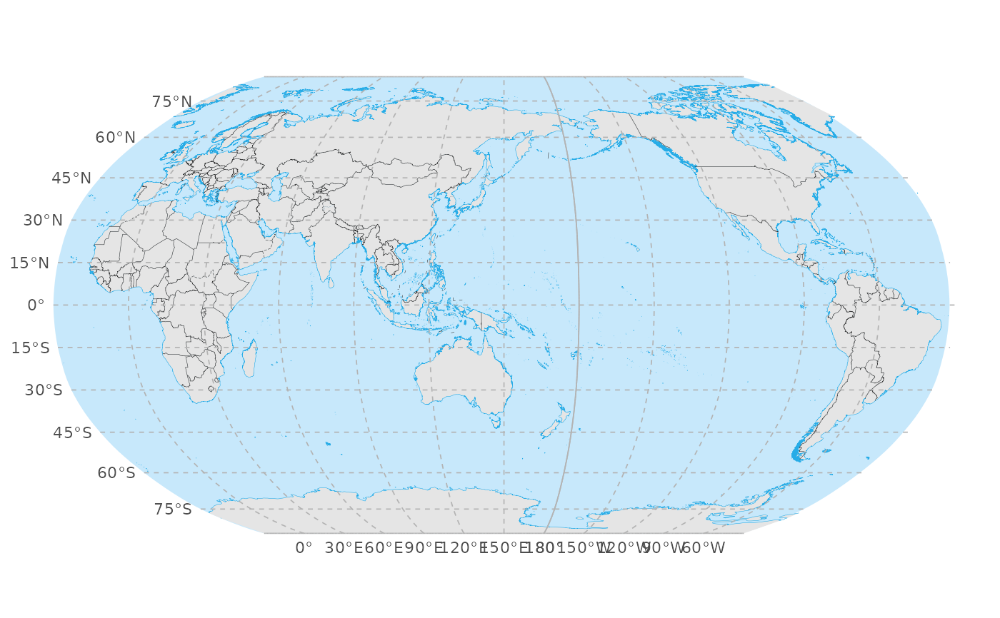
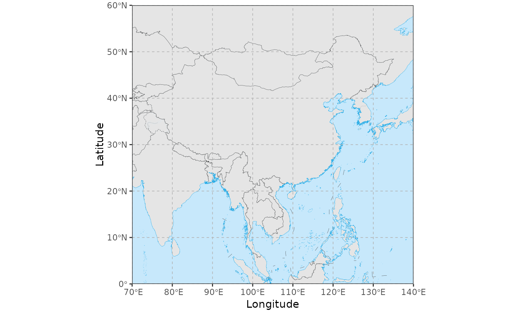
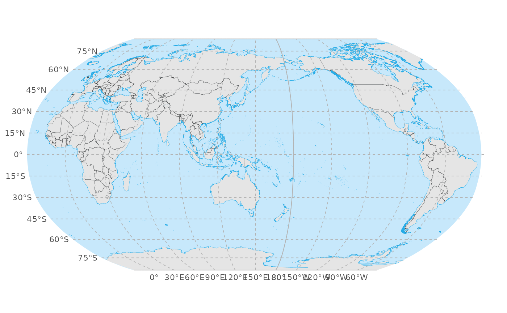
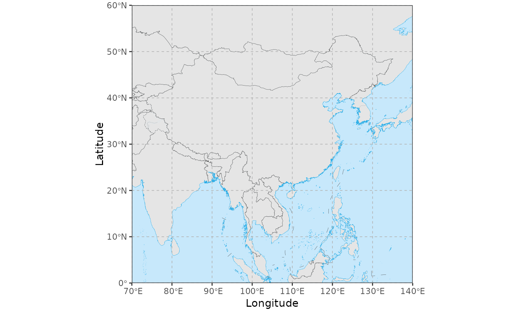

Global graticule annotation for ggplot2 maps
Source:R/annotation_graticule.R
annotation_graticule.RdDraw global latitude-longitude graticules with degree labels as annotation layers for `ggplot2` maps. Graticules are constructed in geographic coordinates (EPSG:4326) over a user-defined window (given by `xlim`/`ylim`, default: the full globe), optionally split at the antimeridian according to the target CRS, and then transformed into the map CRS. Regional maps usually do not need this function and can rely on the default `coord_sf()` axes.
Usage
annotation_graticule(
xlim = NULL,
ylim = NULL,
crs = "+proj=longlat +datum=WGS84",
lon_step = 60,
lat_step = 30,
line_color = "grey70",
line_width = 0.3,
line_type = "dashed",
label_color = "grey30",
label_size = 3,
label_offset = 5,
label_offset_lon = NULL,
label_offset_lat = NULL,
sides = c("left", "bottom"),
...
)Arguments
- xlim
Numeric vector of length 2 giving the longitude range in degrees as `c(xmin, xmax)` in longitude-latitude (WGS84, EPSG:4326). Longitudes are interpreted in `[-180, 180]`. If both `xlim` and `ylim` are `NULL` (default), the full globe `(-180, 180)` is used.
- ylim
Numeric vector of length 2 giving the latitude range in degrees as `c(ymin, ymax)` in longitude-latitude (WGS84, EPSG:4326). Latitudes are interpreted in `[-90, 90]`. If both `xlim` and `ylim` are `NULL` (default), the full globe `(-90, 90)` is used.
- crs
Target coordinate reference system for the graticule, given as a PROJ string or `sf::crs` object. This should match the CRS used in your map layers and `coord_sf()`. The default is a WGS84 longitude- latitude definition.
- lon_step
Spacing in degrees between meridians. Default is `60`.
- lat_step
Spacing in degrees between parallels. Default is `30`.
- line_color
Line colour for graticule lines. Default is `"grey70"`.
- line_width
Line width for graticule lines. Default is `0.3`.
- line_type
Line type for graticule lines. Default is `"dashed"`.
- label_color
Text colour for labels. Default is `"grey30"`.
- label_size
Text size for labels, passed to `ggplot2::geom_text()`. Default is `3`.
- label_offset
Common offset applied to all labels, in the units of the target CRS. For geographic CRSs (degrees), this is interpreted as degrees (default `5`). For projected CRSs (e.g. metres), you typically need a much larger value (e.g. `3e5` for Robinson or azimuthal projections).
- label_offset_lon
Optional offset applied only to longitude labels. If supplied, this overrides `label_offset` for longitude labels.
- label_offset_lat
Optional offset applied only to latitude labels. If supplied, this overrides `label_offset` for latitude labels.
- sides
Character vector indicating on which sides labels should be drawn. Any combination of `"bottom"`, `"top"`, `"left"`, `"right"`. Default is `c("left", "bottom")`.
- ...
Additional arguments forwarded to `ggplot2::geom_sf()` for the graticule line layer (for example, `alpha`).
Value
A list of two `ggplot2` layers: a `geom_sf()` layer for graticule lines and a `geom_text()` layer for the labels.
Details
Graticules are always generated in WGS84 longitude-latitude (EPSG:4326). When a non-zero central meridian (`lon_0`) is detected in the target CRS, meridians and parallels can be split at the antimeridian via `sf::st_break_antimeridian()` before being transformed, which avoids unexpected line wrapping in projections centred away from 0 degrees.
Latitude labels at +/-90 degrees are always omitted. When drawing a full-globe longitude-latitude map with a 0 degree central meridian (that is, when `xlim` and `ylim` are both `NULL` and the CRS is geographic with `lon_0 = 0`), longitude labels at +/-180 degrees are omitted (the corresponding graticule lines may still be drawn).
Examples
library(ggplot2)
# \donttest{
# 1. Graticule on a WGS84 world map
ggplot() +
geom_world() +
annotation_graticule(
lon_step = 60,
lat_step = 30,
label_offset = 5
) +
coord_sf(crs = "+proj=longlat +datum=WGS84") +
theme_void()
 # 2. Robinson projection centred at 150E
crs_robin_150 <- "+proj=robin +lon_0=150 +datum=WGS84"
ggplot() +
geom_world(crs = crs_robin_150) +
annotation_graticule(
crs = crs_robin_150,
lon_step = 30,
lat_step = 15,
label_offset = 3e5
) +
coord_sf(crs = crs_robin_150) +
theme_void()
#> although coordinates are longitude/latitude, st_intersection assumes that they
#> are planar

# 3. Regional China map (long-lat) with graticule lines and axis labels
cn_xlim <- c(70, 140)
cn_ylim <- c(0, 60)
ggplot() +
geom_world() +
annotation_graticule(
xlim = cn_xlim,
ylim = cn_ylim,
crs = 4326,
lon_step = 10,
lat_step = 10,
label_color = NA, # draw only lines; use axis labels instead
label_offset = 1,
label_size = 3.5
) +
coord_sf(
xlim = cn_xlim,
ylim = cn_ylim,
expand = FALSE
) +
labs(
x = "Longitude",
y = "Latitude"
) +
theme_bw()

# }
# 2. Robinson projection centred at 150E
crs_robin_150 <- "+proj=robin +lon_0=150 +datum=WGS84"
ggplot() +
geom_world(crs = crs_robin_150) +
annotation_graticule(
crs = crs_robin_150,
lon_step = 30,
lat_step = 15,
label_offset = 3e5
) +
coord_sf(crs = crs_robin_150) +
theme_void()
#> although coordinates are longitude/latitude, st_intersection assumes that they
#> are planar

# 3. Regional China map (long-lat) with graticule lines and axis labels
cn_xlim <- c(70, 140)
cn_ylim <- c(0, 60)
ggplot() +
geom_world() +
annotation_graticule(
xlim = cn_xlim,
ylim = cn_ylim,
crs = 4326,
lon_step = 10,
lat_step = 10,
label_color = NA, # draw only lines; use axis labels instead
label_offset = 1,
label_size = 3.5
) +
coord_sf(
xlim = cn_xlim,
ylim = cn_ylim,
expand = FALSE
) +
labs(
x = "Longitude",
y = "Latitude"
) +
theme_bw()

# }